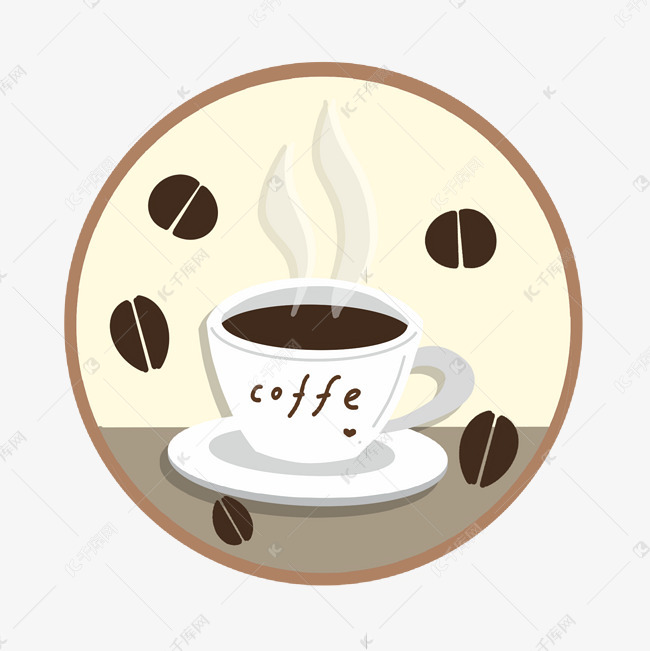
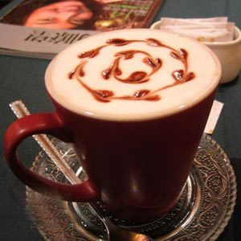
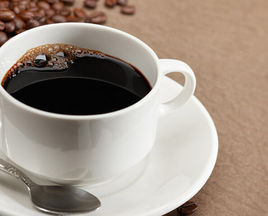
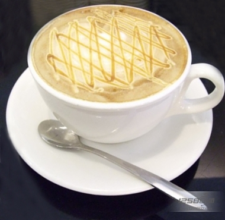

来杯咖啡吧？

| 咖啡 | 价格 |
| 拿铁 | 34.00 |
| 卡布奇诺 | 26.00 |
| 美式咖啡 | 23.00 |
| 焦糖玛奇朵 | 30.00 |
拿铁
拿铁(Latte)在意大利语里是"牛奶"的意思，如果你点一杯"拿铁"，那么服务生只会给你上一杯牛奶。而意大利语的Caffè Latte指的才是拿铁。现在很多冷饮店都会推出自己的"拿铁"系列，像"红茶拿铁""抹茶拿铁"等等，其实就是奶茶而并没有咖啡的成分。 拿铁咖啡是意大利浓缩咖啡(Espresso)与牛奶的经典混合，意大利人也很喜欢把拿铁作为早餐的饮料。意大利人早晨的厨房里，照得到阳光的炉子上通常会同时煮着咖啡和牛奶。喝拿铁的意大利人，与其说他们喜欢意大利浓缩咖啡，不如说他们喜欢牛奶，也只有Espresso才能给普普通通的牛奶带来让人难以忘怀的味道。
卡布奇诺
卡布奇诺的味道很好，但它的名称来历却更有学问，一直是欧美研究文字变迁的最佳体材。 Cappuccino此字的历史，足以说明一个字常常会因为看来像某样东西，最后被引申成其它字义，远远超出造字者原先用意。听来似乎蛮复杂的。创设于一五二五年以后的圣芳济教会(Capuchin)的修士都穿著褐色道袍，头戴一顶尖尖帽子，圣芳济教会传到意大利时，当地人觉得修士服饰很特殊，就给他们取个Cappuccino的名字，此字的意大利文是指僧侣所穿宽松长袍和小尖帽，源自意大利文"头巾"即Cappuccino。
美式咖啡
"美式咖啡"(英文:Americano，意大利语:Caffè Americano)咖啡的一种，是最普通的咖啡。是使用滴滤式咖啡壶所制作出的黑咖啡，又或者是意式浓缩中加入大量的水制成。 美式咖啡口味比较淡。因为一般的萃取时间相对较长(大概四五分钟)，所以咖啡因含量较高。
焦糖玛奇朵
焦糖玛奇朵(英文:Caramel Macchiato)是在香浓热牛奶上加入浓缩咖啡、香草，再淋上纯正焦糖而制成的饮品，融合三种不同口味。Macchiato意大利文，意思是"烙印"和"印染"，中文音译"玛奇朵"。"Caramel"意思是焦糖。焦糖玛琪朵，寓意"甜蜜的印记"。